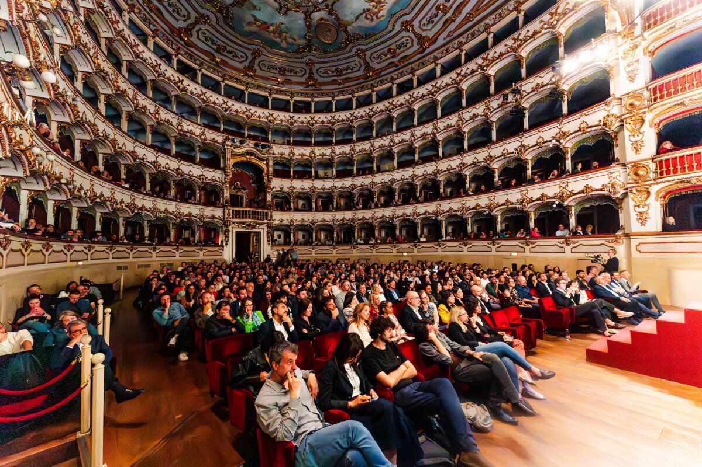
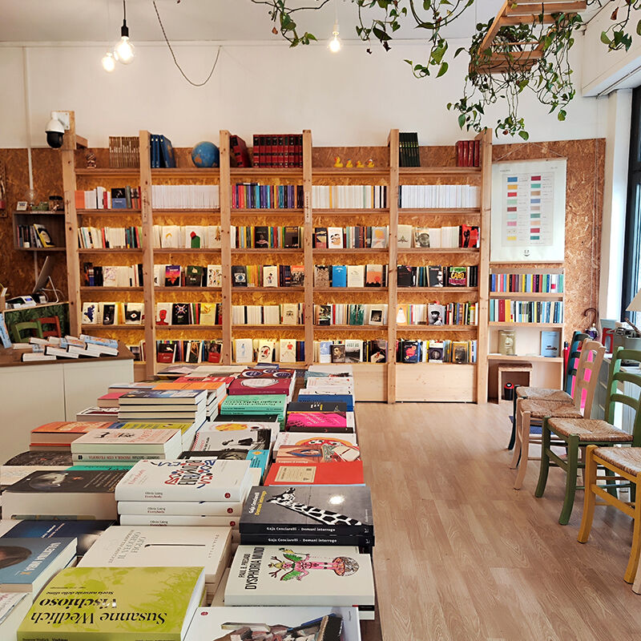
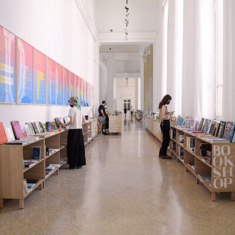
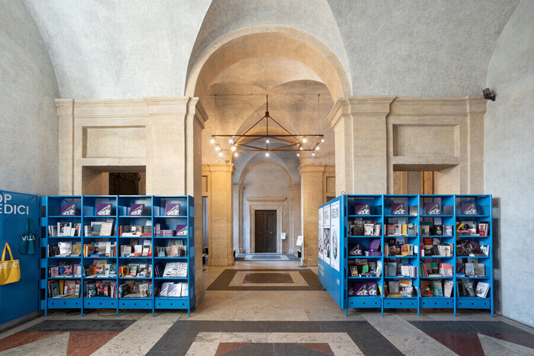
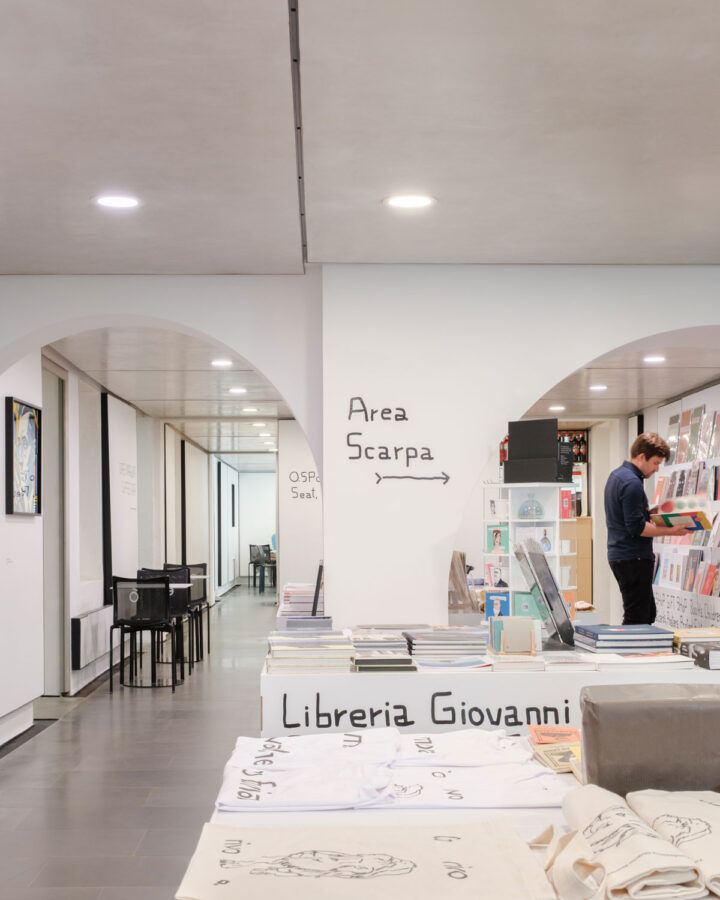

Botanica della meraviglia
Come possiamo andare avanti quando tutto crolla? Un'indagine sullo spirito umano che documenta le pratiche di resistenza culturale tra le crepe dell'apocalisse.
Scopri il libroIstituzione culturale indipendente
Filosofia pubblica, editoria e media. Dal 2015 pubblichiamo libri, apriamo librerie, produciamo podcast, festival e percorsi di formazione: un'istituzione culturale indipendente, sostenuta da chi la legge, la ascolta e la attraversa.
Un pianeta immaginario raccontato da Borges. Un nuovo mondo creato attraverso lo sforzo comune dell'immaginazione. Dal 2015 siamo un'istituzione culturale indipendente — filosofia pubblica, editoria, media — e costruiamo ponti tra le idee e le azioni.
Un ecosistema in cui ogni dimensione si intreccia con le altre
Autunno — Inverno 2026–27
Eventi passati

Conferenze, festival, presentazioni, corsi e viaggi in Italia e nel mondo
Tutti gli eventiOgni settimana prendiamo una cosa del presente — o un libro — e la apriamo con una domanda: che cos’è?
È il modo che abbiamo trovato per pensare invece di essere pensati. La scrivono Maura Gancitano e Andrea Colamedici, e la leggono oltre cinquantacinquemila persone.
Iscriversi è gratuito. Chi vuole sostenerla trova un abbonamento su tlonletter.it.

Roma Ostiense
Via Federico Nansen, 14
00154 Roma
libreriateatro@tlon.it

Galleria Nazionale
Viale delle Belle Arti, 131
00196 Roma
bookshoplagallerianazionale@tlon.it

Accademia di Francia
Viale Trinità dei Monti, 1
00187 Roma

Querini Stampalia
Campo Santa Maria Formosa
30122 Venezia